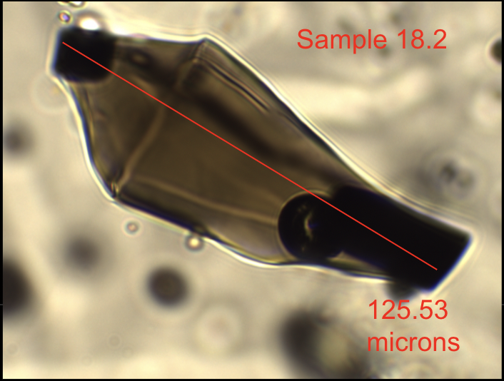

Observational Seismologist working in Alaskan Subduction Zone
My fascination with earthquakes stems from both a cognizance of their societal impact as well as a genuine curiosity of their interaction with the physical world. I arrived at Cornell intending to pursue civil engineering, with a particular focus on geotechnical and in general the engineering approach toward real world problem solving. As I took more classes in earth science, I began to realize the importance of not only being able to describe the world quantitatively, but from a physical and geological perspective. The Earth and Atmospheric Sciences program in the College of Engineering allowed me to explore this intersection, where classes like Evolution of the Earth System gave me an understanding of geophysical phenomena over geologic time scales, and Inverse Methods of allowed me to quantify these phenomena through modeling with observational data. My enthusiasm for geophysics is a product of my passion for a well-rounded, fundamental understanding of the Earth in order to apply it to consequential problems in active tectonics. Higher education and a research driven career is the way for me to facilitate this explorative learning. I'm planning to start my PhD in Fall 2022, and continue my research in seismology at an institution that prioritizes collaboration, teaching, social good, and love for the Earth!
Read more about my past research projects below.
RESEARCH
Volatiles and Volcanism: Analyzing Iki Melt Inclusions for Carbon Dioxide, Water, and Carbonate Content

Identifying Triplicated P-phase Arrivals in Amphibious Seismic Data to Explore the Mantle Transition Zone
Relocating the 2021 and 1938 Chignik Alaska Aftershock Sequences with AACSE Array to Improve Rupture Area Estimates
Analyzing Iki Melt Inclusions
A main controlling factor on the explosivity of an eruption is the dissolved volatile content, such as carbon dioxide and water. Once the melt becomes supersaturated in volatiles, the gases exsolve from the magma by nucleating bubbles. The exsolution of low density gases drives volcanic eruptions, as the bubbles coalesce and degass, driving the magma upwards due to the pressure created in the conduit. Further, water in particular controls physical and chemical characteristics of the magma such as crystallization and polymerization, and therefore affects physical properties of the magma such as density and viscosity, which in turn influence eruptive behavior. Therefore, measuring the volatile content of the source magma allows researchers to better understand the behavior of the eruption in terms of its explosivity. Secondly, measuring the volatile content in the initial magma source allows us to constrain the depth of the source, and therefore construct a fuller picture of the plumbing system for the given volcano.
But how do we measure the initial volatile content if the erupted material has been degassed, as happens during the ascension of the magma? Melt inclusions are pockets of initial melt that have been trapped inside crystals that formed at depth that act like pressure vessels. Melt inclusions contain the dissolved volatiles in the magma at the pressure, and therefore depth at which they were trapped, and ideally, the crystal protects the melt from further modification. Therefore, measurement of the total volatile content in the melt inclusion allows us to make such calculations. I emphasize total volatile content here, as we have to measure not only the content in the melt, but in the vapor bubble as well. The vapor bubble forms with cooling and decompression, where the melt contracts and the void space is filled by volatiles that are no longer soluble in the melt.
I spent my semester looking for and analyzing melt inclusions in olivine from the Kilauea Iki Eruption in 1959. In addition to the detection of pure CO2 and water, a main driver behind this project was to identify inclusions with carbonate content in and around the vapor bubble as well as carbon dioxide in the bubble. Research up until now involving Iki samples has only looked at the vapor phases of CO2 in melt inclusions (both in glass and vapor bubble), when in actuality, vapor bubbles host a variety of solid phases as well, including carbonates. Studies have shown that up to 80 percent of CO2 that is ‘lost’ from the glass during vapor bubble formation can be hosted in the solid carbonate phases that form in the vapor bubbles as CO2 concentrates (Venugopal et al. 2020), but this possibly significant carbon reservoir has not been included in melt inclusion analysis. This could potentially lead to underreporting of actual CO2 initially present in magma.
I was hoping to identify melt inclusions with both carbonate and CO2 that would be suitable to run a homogenization experiment, where the carbonate is heated and converted into carbon dioxide to be re analyzed for CO2 content, to get a more accurate concentration. My project was focused on the first stage of constraining initial volatile content, where I mainly worked on picking melt inclusions, polishing and mounting them, running Raman analysis, then doing post analysis to find the CO2 content in the vapor bubbles.
Click the links below to read the full report and presentation!
Identifying Triplicated P-phase Arrivals
The Mantle Transition Zone (MTZ) is the physical and chemical transitional layer that separates the Lower and Upper Mantle between depths of 410 and 660 kilometers. Seismograms recorded between 10 and 30 degrees epicentral from seismic events show clear evidence of rays traveling through these upper mantle discontinuities, known as triplication. Identifying triplicated P-phases in seismic arrival data allows seismologists to constrain features of the MTZ through waveform modeling, as differences in expected and observed travel times yield information about the exact ray paths taken such as depth of discontinuity and vertical heterogeneity. The Alaska Peninsula is an optimal region of study, due to the subduction of the Pacific Plate under the North American Plate, giving rise to significant seismic activity. The deployment of both onshore and ocean bottom seismometers during the Alaska Amphibious Community Seismic Experiment (AACSE) has gathered fifteen months of seismic data from which this project draws. After identifying suitable events for the study, the project discerns and enhances these triplication patterns from the amphibious data using array processing techniques such as filtering, stacking, beamforming, frequency wavenumber analysis, and cross correlation. The paper goes on to discuss the specific challenges with ocean bottom seismometer data, as well as effects from volcanic structures on arrival data while using the listed techniques to rectify these obstacles. This identification would be important to the field of earth science, as it would advance the understanding of Earth’s internal processes by better understanding key features of its structure. Currently, there is much speculation as to the origin of volcanic activity and magmas which seem unrelated to known processes of volcanism. Many theories involve the MTZ, characterizing a new class of volcanism that originates in this zone which would be greatly aided by an accurate model of the region.
Click the links below to read the full report and presentation!
Relocating the 2021 and 1938 Chignik Alaska Aftershock Sequences
The 2021 M8.2 Chignik Alaska earthquake and its aftershock sequence raise questions about whether it is a repeat of the 1938 M8.3 event in the Semidi segment, the extent to which their rupture areas overlap, how either relate to seismically-imaged structures, and whether additional megathrust earthquakes in the region are possible. Accurate aftershock locations for these great earthquakes are key, as the 1938 rupture area is estimated from its recorded aftershocks. Like most subduction zone earthquakes, these sequences occurred offshore away from seismometers, so their geometry is uncertain. Fortunately, in 2018-19 an on and offshore experiment (AACSE) was conducted in this region, providing good control on seismicity location prior to 2021. We improve the rupture area estimates for the Chignik and 1938 sequences using well-located earthquakes from AACSE to calibrate travel times to stations recording during the 2021 and 1938 sequences and subsequently relocating them. Our approach is fourfold: (1) Gather regional station corrections using the AACSE seismometers in the Chignik rupture region. Though the array did not record the 2021 event, the AACSE catalog is used to collect corrections for regional stations that recorded the sequence. (2) Apply these corrections to the velocity model to relocate the Chignik sequence. Initial hypocenter relocations show little lateral change, with more significant depth variation. Initial relocated hypocenters remain 25-45 km deep, consistent with the working theory that the 2021 rupture did not reach the surface. (3) Retrieve teleseismic station corrections for the larger 2021 aftershocks prior to relocation of the 1938 rupture, which only has data from stations >30 degrees epicentrally. (4) Relocate the 1938 sequence using teleseismic corrections. There are too few recorded events in the 1938 sequence to unambiguously map the aftershock zone, but initial analysis suggests relocations to be similar to their original locations.
This project is currently in progress, and will be presented as a poster at SSA (Seismological Society of America) Conference in April.
TEACHING
Coming into engineering as a freshman, I noticed that the disparity between students in our successes during introductory courses has nothing to do with our intellect, but rather our background, especially given the often uncompromising teaching style that has little room for alternative learners. Having had this experience, I made it a priority to help make STEM as accessible to all students entering Cornell by becoming a peer tutor and a TA through Engineering Learning Initiatives (ELI), who provide free tutoring and Academic Excellence Workshops (AEWs) for many of the introductory courses in engineering to all students. My experiences teaching have been invaluable to me, and strongly influenced my interest in pursuing a graduate degree where I will not only be able to continue my effort to bolster education for alternative and underrepresented learners as a TA, but later on as a professor in my career in academia. Tutoring and TAing has made me so much more confident in the course material as well, and I am incredibly grateful for the opportunity to work with my peers in a collaborative way.
Access my Google Drives with teaching materials below!
{kind=link}